Campak
Penyakit Campak
Campak adalah penyakit yang menunjukan gejala ruam pada seluruh tubuh dan sangat menular. Campak bisa mengarah pada komplikasi yang lebih serius dan sangat mengganggu. Umumnya, gejala campak muncul sekitar satu hingga dua minggu setelah tubuh terkena virus campak tersebut.
Pengobatan tradisional untuk campak.
Bahan yang dibutuhkan :
1. 1 buah jagung muda
Cara Pembuatan :
1. Jagung muda mentah dikunyah, lalu disemburkan ke badan yang terkena campak. Lakukan 2-3 kali sehari.
Tanaman Obat Sambiloto
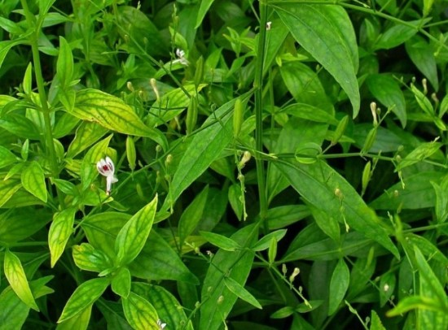
Tanaman Obat Sambiloto
Tanaman ini tumbuh liar di tempat terbuka di dataran rendah sampai dengan ketinggian 700 meter di atas permukaan laut. Tinggi batangnya bisa mencapai 50-90cm.
Daunnya berwarna hijau tua di permukaan atas, berwarna hijau muda di bagian bawah dengan panjang daun 2-8 dan lebar 1-3 cm. Sambiloto bisa diperbanyak dengan biji atau setek batang.
Sambiloto berkhasiat untuk mengatasi hepatitis, disentri basiler, infeksi saluran empedu, radang saluran napas, radang ginjal akut, radang telinga, kencing nanah, kencing manis, darah tinggi, keracunan jamur, kusta dll.
https://rivaldi48.blogspot.com/
Tanaman Obat Rumput Mutiara
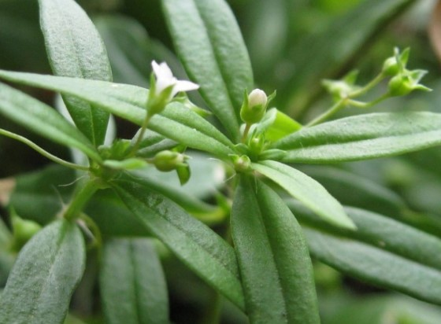
Tanaman Obat Rumput Mutiara
Rumput mutiara bisa tumbuh sumbur pada tanah yang lembab di pinggir selokam, atau di sisi jalan. Batangnya bersegi dengan daun saling berhadapan dan memiliki tangkal daun yang pendek.
Tingginya bisa mencapai 15-50 cm, panjang daun 2-5 cm dan jumlah bunga majemuk 2-5. Rumput mutiara mempunyai khasiat yang sama seperti Hedyotis diffusa Wild.
Beberapa khasiatnya yaitu untuk mengatasi radang usus buntu, tonsilis, hepatitis, bronchitis, radang panggul, infeksi saluran kemih, pneumonia dan kanker payudara.
https://rivaldi48.blogspot.com/
Tanaman Obat Putri Malu
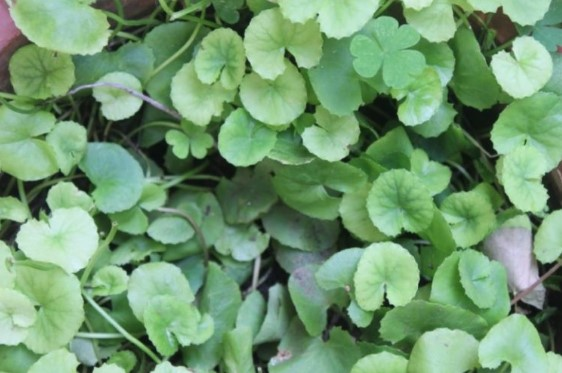
Tanaman Obat Putri Malu
Tanaman putri malu banyak tumbuh liar di pinggir jalan dan tanah lapang. Daunnya akan menutup jika disentuh. Batangnya bulat, berduri dan berbulu.
Putri malu memiliki bunga yang berbentuk bulat seperti bola, warnanya merah muda dan bertangkai. Daun dan akar tanaman putri malu, baik yang segar atau yang dikeringkan bisa digunakan sebagai obat tradisional.
Khasiat dari putri malu diantaranya untuk mengobati rheumatic, susah tidur, cacingan, radang saluran nafas, herpes, dan panas tinggi pada anak-anak.
https://rivaldi48.blogspot.com/
Tanaman Obat Patah Tulang
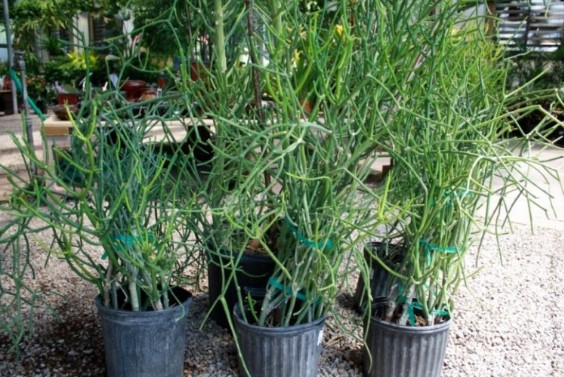
Tanaman Obat Patah Tulang
Tanaman patah tulang berasal dari kawasan Afrika tropis, tumbuh di tempat terbuka yang terkena sinar matahari langsung. Di Indonesia tanaman ini banyak ditemui ditanam sebagai tanaman pagar, ditanam dipot sebagai tanaman hias, ada juga yang tumbuh liar.
Patah tulang tumbuh tegak ke atas, tingginya mencapai 2-6 meter. Daunnya terdapat pada ujung ranting yang masih muda dengan panjang 7-25 mm. Bunganya berwarna kuning kehijaun, terdapat di ujung batang.
Tanaman patah tulang bisa digunakan sebagai tanaman obat. Cabang dan rantingnya yang sudah dikeringkan dan dibakar bisa digunakan untuk mengusir nyamuk.
Kegunaan akar dan ranting tanaman patah tulang diantaranya untuk mengobati sakit lambung, kaki dan tangan baal, rematik, penyakit kulit, sifilis, nyeri syaraf, wasir dan tukak rongga hidung.
https://rivaldi48.blogspot.com/
Tanaman Herbal Pandan Wang
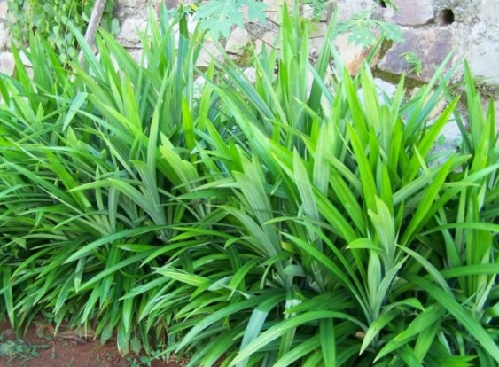
Tanaman Herbal Pandan Wangi
Pandan wangi tumbuh di daerah tropis di tempat yang agak lembab dari daerah pantai sampai daerah dengan ketinggian 500 meter di atas permukaan laut. Tingginya mencapai 1-2 meter, panjang daun 40-80 cm dan lebar daun 3-5 cm.
Daun pandan wangi baunya harum, biasa digunakan sebagai bahan rempah-rempah, bahan baku pembuatan minyak wangi dan penyedap rasa pada masakan.
Daun pandan wangi mengandung senyawa alkaloida, polifenol, saponin, tannin, flavonoida dan zat warna. Daun pandan berkhasiat untuk mengatasi ketombe, lemah saraf, rambut rontok, tidak nafsu makan, menghitamkan rambut, rematik, pegal linu, dan sakit disertai gelisah.
https://rivaldi48.blogspot.com/
Tanaman Herbal Lidah Buaya
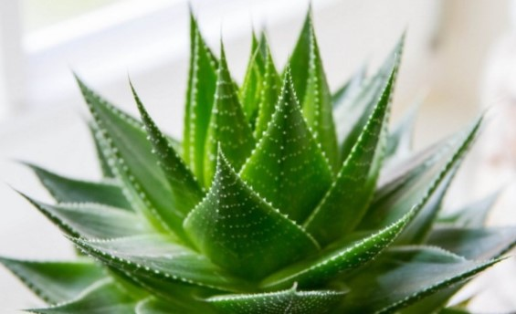
Tanaman Herbal Lidah Buaya
Lidah buaya banyak tumbuh di kawasan Afrika bagian utara dan Hindia Barat. Lidah buaya banyak ditanam didalam pot di pekarangan rumah sebagai tanaman hias.
Daun lidah buaya berbentuk taji yang tebal dan agak runcing. Panjangnya sekitar 15-36 cm dengan lebar 2-6 cm. Batang dari lidah buaya tidak terlihat karena tertutup oleh daun yang rapat dan sebagian terbenam di dalam tanah.
Tanaman lidah buaya tahan terhadap panas dan bisa ditanam di tempat yang berhawa panas karena di dalam daunnya tersimpan banyak cadangan air.
Lidah buaya mengandung senyawa kimia yaitu aloin, aloesin, barbaloin, aloenin, isobarbaloin dan aloe-emodin. Daun, bunga dan akar lidah buaya yang segar bisa digunakan untuk penyubur rambut, sakit kepala atau pusing, peluruh haid, sembelit, kencing manis, kejang pada anak dan muntah darah.
https://rivaldi48.blogspot.com/
Tanaman Herbal Lengkuas
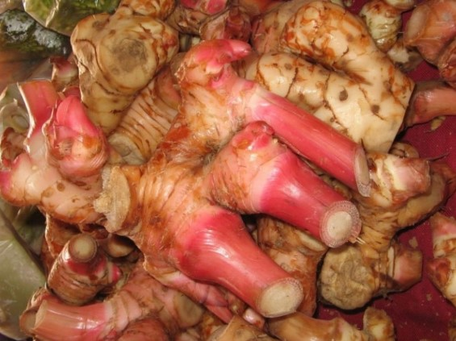
Tanaman Herbal Lengkuas
Lengkuas bisa ditanam di daerah dengan ketinggian 1-1.200 meter di atas permukaan laut. Orang Sunda biasa menyebutnya dengan nama laja.
Kita mengenal 2 jenis lengkuas, yaitu lengkuas merah dan lengkuas putih. Lengkuas putih biasa digunakan sebagai penyedap masakan, lengkuas merah bisa digunakan sebagai obat-obatan tradisional.
Lengkuas berkhasiat untuk mengobati reumatik, panu, sakit limpa, morbili, membangkitkan gairah seks, bronchitis dan menambah nafsu makan.
https://rivaldi48.blogspot.com/
Tanaman Herbal Lada
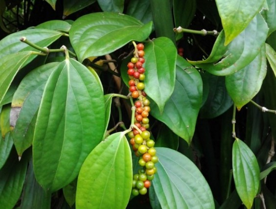
Tanaman Herbal Lada
Lada merupakan tanaman herba tahunan yang tubuh memanjat. Batangnya berwarna hijau kotor, berbentuk bulat, beruas dan memiliki akar pelekat.
Daunnya tunggal, berbentuk bulat telur dengan ujung meruncing. Panjang daun 5-8 cm dengan lebar 2-5 cm. Lada mengandung senyawa minyak atsiri, minyak lemak, pinena, zat pahit, kariofilena, piperidina, limonene, kavisina, filandrena, piperina dan alkaloid.
Buah lada berguna untuk mengobati disentri, sakit kepala, kolera, selesma, kaki bengkak pada wanita hamil, rematik dan nyeri haid.
Daun lada bisa digunakan untuk mengobati penyakit batu ginjal. Lada dalam obat tradisional dibedakan menjadi dua, ada lada hitam (tidak dikupas) dan lada putih (buah sudah masak dikupas.
https://rivaldi48.blogspot.com/
Tanaman Obat Tradisional Kunyit
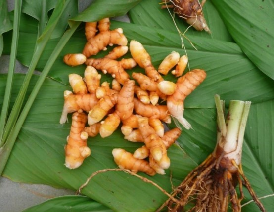
Tanaman Obat Tradisional Kunyit
Kunyit merupakan tanaman rempah dan obat asli wilayah Asia, khususnya Asia Tenggara. Tanaman kunyit kemudian menyebar ke daerah Malaysia, Indonesia, Australia dan Afrika.
Hampir setiap orang Indonesia pasti pernah mengkonsumsi kunyit, baik itu sebagai bumbu masakan, jamu maupun untuk keperluan kesehatan dan kecantikan.
Tanaman kunyit mengandung senyawa kurkuminoid yang memiliki khasiat sebagai obat. Kunyit berkhasiat untuk mengobati penyakit diabetes mellitus, morbili, tifus, berak lender, usus buntu, amandel, disentri, memperlancar ASI, sakit keputihan, perut mulas saat haid, dan membantu melancarkan haid.
https://rivaldi48.blogspot.com/
Tanaman Obat Kumis Kucing
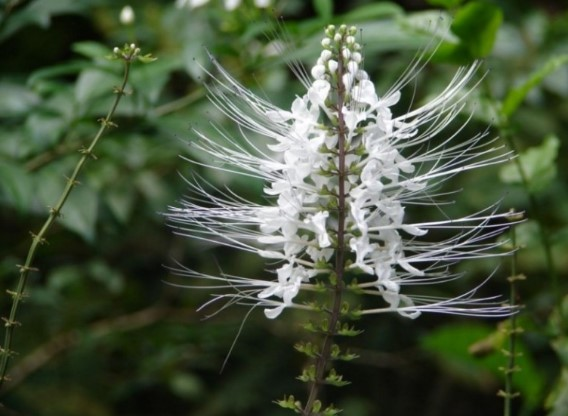
Tanaman Obat Kumis Kucing
Tanaman kumis kucing bisa tumbuh di daerah dengan ketinggian 500-900 meter di atas permukaan laut. Tanaman ini tumbuh tegak ke atas dengan tinggi mencapai 1-2 meter.
Batangnya berbentuk segi empat agak beralur dan berbulu pendek. Daunnya tunggal berbentuk telur lonjong atau belah ketupat, bergerigi di bagian tepinya dan terdapat bintik-bintik di kedua permukaannya. Bunganya keluar di ujung cabang, berwarna ungu pucat atau putih.
Seluruh bagian kumis kucing bisa dimanfaatkan sebagai obat setelah di anginkan dan dijemur di panas matahari. Khasiatnya antara lain untuk menghilangkan panas dan lembab, infeksi ginjal, peluruh air seni, infeksi kandung kemih, encok dan sakit kencing batu.
https://rivaldi48.blogspot.com/
Tanaman Obat Kencur
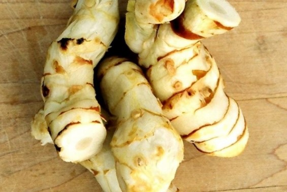
Tanaman Obat Kencur
Kencur termasuk kelompok tanaman jenis empon-empon yang tumbuh subur di daerah dataran rendah. Kencur memiliki daging buah yang lunak, berwarna putih dan tidak berserat.
Kulit luar kencur berwarna coklat. Setiap kencur memiliki helaian daun yang tidak lebih dari 2-3 lembar dan saling berhadapan. Kencur bisa ditanam di dalam pot atau di kebun yang mendapat sinar matahari cukup.
Rimpang kencur mengandung mineral (13,73 %), pati (4,14 %) dan minyak atsiri (0,02 %). Kencur berkhasiat untuk mengobati radang lambung, menghilangkan lelah, radang anak telinga, memperlancar haid, menghilangkan darah kotor, masuk angin, influenza pada bayi, sakit kepala, mata pegal, batu dan keseleo.
https://rivaldi48.blogspot.com/